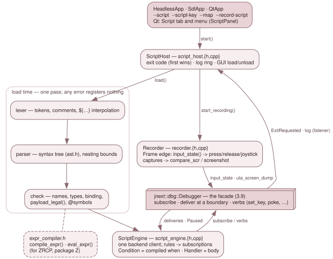

3.10.6 The debugger scripting language¶
A debugger script (.jds, GH #26, carrying #279's use cases) is a list of
rules. Each rule is an event and the actions to run when it happens. The
language lives in src/script/ (CMake target jnext_script). It has no
toolkit dependency, so it is built in every configuration, and it reaches the
machine only through the published jnext::dbg::Debugger facade of
3.9.1 — never through Emulator. The record /
replay workflow of GH #20 is built on top of it (the recorder, below).
The design and the reason behind each rule is
doc/design/debug-subsystem/dsl-frontend.md. Its "as built" appendices (G to
M) record every choice made where the design was silent, and every place the
code departs from it. This page describes the code.

The pieces¶
| File | What it holds |
|---|---|
lexer.{h,cpp} |
tokens; comments ; // #; integers (decimal, 0x, $, 0b, 32-bit wrapping); strings with ${expr[:x2\|x4\|d]} interpolation; the bracketed accessors (mem[, mem16[, phys[, nextreg[, mmu[, page[, stack[, changed(, depth() as single tokens |
parser.{h,cpp}, ast.h |
recursive descent over the grammar; the syntax tree (Script, Rule, EventSpec, Action, Expr) |
names.{h,cpp} |
the one table of reserved words, built-in state names (LIVE) and payload names (PAYLOAD); which names set may assign |
check.{h,cpp} |
the load-time checks and BINDING: each upper-case name resolved to what it reads in its scope; payload_legal() — the per-event payload table |
value.h, state.{h,cpp} |
the value model; the interpreter state: variables and the snapshot stacks |
evaluator.{h,cpp} |
evaluation over a checked tree; make_condition() (a rule's when as a backend predicate); machine_code() |
expr_compiler.{h,cpp} |
the public library surface: compile_expr(), eval_expr() |
script_engine.{h,cpp} |
ScriptEngine: loaded scripts as backend subscriptions; the actions; stop and exit |
script_host.{h,cpp} |
ScriptHost: what the three loop owners hold to run --script, --script-key, --map and --record-script |
recorder.{h,cpp}, key_names.{h,cpp} |
the GH #20 recorder, and the key names it writes |
src/platform/recording_info.h |
recording_info_of(): the recorder's header facts, taken from the booted machine |
src/platform/host_key_latch.h, host_key_wiring.h |
the script host keys (Alt+1..Alt+8) in the emulator windows |
src/debugger/script_panel.*, debugger_window.cpp |
the Qt Script tab and Script menu |
From text to a checked script¶
parse_script() stops at the first syntax error and reports it as
line:column: message. It also bounds nesting:
- an expression tree is at most
MAX_EXPR_DEPTH(200) levels tall; ifis nested at mostMAX_IF_DEPTH(64) deep.
A chain of operators counts one level per operator, so a or b or … stops at
200 terms. Every later pass recurses over these trees and nothing else, so this
one bound is what keeps a pathological script, or a ZRCP expression, from
overflowing the stack.
check_script() then reports every load-time error with its position, not just
the first. It binds each name in place (Expr::builtin), and the binding
depends on the scope:
PCis the CAUSING instruction's PC in an event rule, and the CPU's PC in a filter bound or avarinitializer;HC_ULAandCVCare the Copper step's position in acopperrule, and the live raster elsewhere;- a payload name is admitted only where
payload_legal()says the backend'sEventcarries it.PREVneeds a write,CPCneeds acopperrule, and filter bounds and initializers have no payload at all.
Types are fixed here too. Strings only compare and interpolate; they never go
into arithmetic or a condition. @symbols are resolved against the backend's
one symbol table (CAP-SYM, filled by --map or Map > Load MAP). A z88dk
map's ; addr lines name addresses; its ; const lines (sizes, and section
bounds such as __data_crt_head) are kept in a separate name-only table, so
@__data_crt_head resolves while the disassembler and lookup(addr) never
name an address after a constant (SymbolTable::lookup_name()). A name defined
twice resolves to its first definition, a constant as an address; a name that
is both is the address (row SYM-13).
Values, state and the snapshot stacks¶
Integers are 32-bit signed and wrap. Comparisons, and, or and not yield
1 or 0, and and/or short-circuit.
Each loaded script has its own variables, labels and snapshot stacks
(ScriptState). A snapshot (snap NAME) records:
- the registers, with IFF1, IFF2, IM, SP and PC;
- the word at SP;
- the eight MMU slots;
- FRAME and CYCLE.
All of it is read through the side-effect-free inspection surface. Each name is
a stack, so nested entries pair with their own exits. changed(NAME, regs),
changed(NAME, mmu), changed(NAME, iff1) and changed(NAME, stack0) and
dump_diff NAME compare the machine against the TOP entry.
A stack holds at most MAX_SNAPSHOT_DEPTH (4096) entries. A full stack on
snap, or an empty one on unsnap / a field / changed(), is a run-time
error, never a silent drop. depth() of an empty stack is 0, not an error.
Run-time failures (division by zero, an address out of range, an empty stack)
throw EvalError with the failing node's position. The engine catches it,
disables the rule and logs SCRIPT ERROR file:L:C: … — rule X disabled.
The expression compiler as a library¶
expr_compiler.h is the stable surface other frontends call, and it names no
AST type:
compile_expr(text, scope)returns adbg::Condition— the backend's CAP-EVT predicate — for events of aPayloadScope;eval_expr(text, debugger)evaluates once, in the no-event scope.
The engine compiles every when through the same code, via make_condition()
in the evaluator. The ZRCP server (3.10.5) is the other
caller: src/remote/zrcp/zrcp_condition.* translates ZEsarUX's breakpoint
dialect into this grammar — tokenising and grouping as ZEsarUX does, emitting a
fully bracketed expression — and compiles it here, so it owns no evaluator. The
one thing the language cannot read is whether a slot holds ROM, so ZEsarUX's
SEGn / ROM / RAM are evaluated by the adapter.
The engine: rules as backend subscriptions¶
ScriptEngine is ONE backend client (ClientKind::Script), and it is also its
own Listener. load(text, file) does four things, in this order:
- parses and checks the text;
- runs the
varinitializers; - evaluates every filter bound (
@__data_crt_head - 1and the like); - only then registers each rule (
subscriptions_for()).
A script with any error registers nothing.
A rule is one subscription, with one exception: on execute … page P1..P2 is
one subscription per page, because the Execute filter takes a single page
(MAX_EXECUTE_PAGES = 16). The engine spends the sibling subscriptions of a
fired once rule itself.
The subscription's Condition is the compiled when, plus two refinements the
backend filter cannot express: a port range, and the destination of a
dma byte range. So the backend evaluates the predicate, and a non-matching
hit never enters the interpreter. The Handler runs the body at the delivery,
with the machine at an instruction boundary, and returns the verdict.
A stop-only execute rule — its body exactly stop ["msg"] — is
registered as a static Stop with no handler. That is the shape every frontend
breakpoint has, so other clients see it:
probe_execute(pc)lists it whenever itswhenholds atpc(the backend evaluates the condition), which is how a ZRCPrunstops on it;subscriptions()reportsaction Stop, no handler.
Its bookkeeping happens in on_paused() from PausedInfo::matched (see
account_static_stops()): the hit, once, the SCRIPT STOP line, the status
and REASON.
Where actions run:
| Action | When it takes effect |
|---|---|
log, dump_*, snap, assert, stop, exit, enable / disable, set / out |
in the delivery |
press / release |
through IN-01 / IN-02, which queue for the frame edge themselves |
joystick, compare_scr issued outside a frame rule |
the engine's own every-frame subscription (ensure_edge() / run_edge()); issued inside a frame rule, at once — that rule already runs at the edge. An exit issued while a compare_scr is pending is queued behind it and taken at the same edge |
screenshot |
CAP-01 defers it to the next rendered frame |
save_snapshot |
on_frame_ended(), the first pump() at a frame boundary: the backend refuses a save inside a delivery |
on stop rule bodies |
on_paused() |
Mutations (set, out) go through the debugger's write paths (set_register,
poke, nextreg_write, port_out, set_audio_mute_mask). These raise no
events, and the backend logs each as a MUTATE line. With a rewind buffer
active, the first mutation logs a warning.
Every engine log line is stamped [jds F:frame C:cycle].
Stop, exit and the exit code¶
There are three verdicts:
stop, and a failedassertorcompare_scr, returnVerdict::Stop. The backend pauses at the boundary — the end of the offending instruction for a write — and applies the loop owner's stop policy (StopPolicy): Qt pauses; headless and SDL request exit 3. The engine logsSCRIPT STOP: <reason> at PC=… FRAME=… CYCLE=…. The rest of the body still runs, so a span script'sunsnapkeeps its stack balanced.exit n(0..255; any other value is a run-time error, since a process status is 8 bits andexit 256would read as 0) is recorded (take_exit()) and returnsStoptoo, so the machine pauses. It is handed toEngineHost::exitonly at that pause, inon_paused()(hand_over_exit()), when every stop of the boundary is known. While an exit is pending,ScriptHost's listener leaves the backend's own ExitRequested(3) to that hand-over. The backend's firstpump()only takes its baseline and pushes no pause, soScriptHost::start()pumps once before the loop's first tick: anexitat frame 0 still reacheson_paused(). Before the hand-over,take_exit()callsflush_captures(): a screenshot still pending or failed, or asave_snapshotstill queued, turnsexit 0into 1.- A run-time error disables the rule and asks for exit 1 at the next frame edge.
A failure wins over a success at the same boundary. Every failure marks the
boundary by master cycle (mark_failure()): a stop, a failed assert or
compare_scr, a static stop (counted in account_static_stops()), and a
run-time error (code 1). At the hand-over, an exit 0 at a failed boundary
becomes the failure's code. It is logged
SCRIPT EXIT 0 not taken: "reason" failed at the same boundary (exit 3). It
does not matter which rule failed, or whether before or after the exit. The
first failure of the boundary names it, and of two exits at one boundary the
first is taken. A non-zero exit n is kept: it already reports a failure. A
stop at an EARLIER boundary (paused and resumed under StopPolicy::Pause)
does not take a later exit 0 away. An exit inside an on stop rule never
changes the status: the pause that ran it already decided it (a stop's 3, an
exit's own code; SCRIPT-EV-EXIT-IN-ON-STOP). Other clients' breakpoints are
not script failures.
An exit waits for a pending compare_scr. An exit issued while any
compare_scr waits for its frame edge is queued behind it
(Deferred::Kind::Exit) and taken at that edge, after the compare. So
on write … do compare_scr … exit 0 end reports a mismatch instead of exiting
first.
unreached_verdicts() counts what a run never got to: rules holding exit or
compare_scr that never fired, deferred actions still pending, and
--script-keys not yet delivered. The headless and SDL loops ask for it at the
--delayed-automatic-exit* bound and exit 3 when it is non-zero.
status() gives the first exit code actually taken, the stop count with the
last reason, the run-time errors and the unreached count. It is the Script
tab's verdict line.
The host: ScriptHost¶
HeadlessApp, SdlApp and QtApp each hold a ScriptHost beside their
DebugServers. It is declared after debugger_, so it is destroyed first.
start() loads --map into the symbol table, then each --script in order,
and schedules --script-key. Any failure is logged and fails the start, so the
loop owner exits 1 before the machine runs.
It hears exit codes in two ways: from the engine (EngineHost::exit), and from
the backend's ExitRequested, through a NON-ARMING listener client
(ClientInfo::observer). The first code wins. The Qt GUI starts it with
exits = false, so a script there pauses and never exits.
The GUI side of the host:
load_file(),unload_all()(which destroys the engine — its client arms the machine),reload();- a 2000-line log ring of the engine's and the recorder's lines (with the
backend's
[client N]tag removed), read withlog_since().
Host keys¶
Script host keys are the backend's Host events named script1 … script8.
They are reached in four ways:
- The emulator windows, Qt and SDL alike, go through the shared key
Router(host_key_latch.h). Alt (left or right) with no Ctrl, Shift or GUI, plus a digit 1..8, calls the callbackwire_script_keys()installs. That callback runsDebugger::raise_host_event("scriptN"). The digit's press and release are both swallowed, script loaded or not. An autorepeat of a held chord raises nothing, andrelease_all()/attach()forget a held chord. See 3.7 Input. - The debugger window has eight
Qt::WindowShortcutQActions with auto-repeat off. They are window-scoped, so a key pressed in the emulator window is raised once, by the Router. - The keymap refuses Alt+1..Alt+8 as a debugger binding (
validate_combo()indebug_keymap.cpp). - Headless:
--script-key FRAME Nqueues the key in the engine (queue_host_key()).run_edge()raises it at the edge of that frame, before the deferred actions run.
The recorder (GH #20) and compare_scr¶
Recorder is a second backend client (ClientKind::Script, arming). It
OBSERVES and never drives. Its frame-edge handler does the work:
- Input edges. At every frame edge E_K it reads INS-16
input_state()and writes one level edge per change since E_K-1, stampedon frame K-1: - a matrix bit, by its
key_names.cppname, orrow,colfor CAPS SHIFT and SYMBOL SHIFT; - an extended key, as
ext:<name>; - a joystick connector's whole 12-bit state.
The Frame delivery precedes the edge's injection drain and
tick_auto_type(). So a change applied at E_K-1, by a host key or a script
alike, is first seen at E_K, and replaying it at E_K-1 shows it to the guest
from frame K, as the original did.
- Captures. A capture (host key script8, or capture()) is taken at the
NEXT frame edge, where a replay's on frame K rule runs:
- .scr when only the ULA is on (NR 0x68 b7, NR 0x15 b0/b7, NR 0x69 b7
and NR 0x6B b7 all clear). The recorder writes ula_screen_dump() itself
and emits compare_scr.
- PNG otherwise: through CAP-01 screenshot(), with a screenshot line
naming a -replay.png.
- The script. stop() calls flush_captures(), so a PNG still pending is
dropped together with its line. It then writes the script: a header, once
asserts on MACHINE and nextreg[0x05], the warnings (as comments and as
log lines), the edges and captures, and exit 0 two frames after the last
recorded one.
- Cold boot. A Reset{Hard} — a hard reset, or a menu load — restarts the
recording and re-reads the header's facts through recording_info_of().
ScriptHost owns the recorder: start_recording(), capture_screen(),
stop_recording(). --record-script starts it before the first frame, in any
frontend. The host's destructor writes the script on the way out (through
~Recorder).
compare_scr byte-compares ula_screen_dump() with a file. A mismatch logs
the first differing offset (or the sizes) and ASSERT FAILED: msg, then stops.
A file that cannot be read is a run-time error.
Adding a built-in name¶
ast.h: add theBuiltinenumerator. Payload names go afterP_ADDR, which is how the evaluator tells the two apart.names.cpp: add the spelling toLIVEorPAYLOAD. If a script maysetit, add it tois_assignable()too.check.cpp: for a payload name, admit it inpayload_legal()for exactly the events whosedbg::Eventcarries it.evaluator.cpp: read it inread_builtin()'s switch. That switch has adefault, so a missing arm is NOT a build failure: the name parses, and reading it fails at run time withinternal: unbound name. Only a row that reads the name finds it (step 5). Forset, add the write path inScriptEngine::exec()'sActionKind::Setcase, through a debugger verb.- Tests:
- add the name to
script_parse_test'sEVAL-*state-name rows, which read each name against a realDebugger's own answer, and toscript_eval_test'sSEV-BUILTINS; these are the rows that catch a missingread_builtin()arm.script_parse_testalso pins the payload table both ways; script_eval_testcovers the value model;script_events_testcovers a payload as delivered.
Pin each count in test/unit-tests.conf.
6. Docs: §2.3 of the design, and the user guide's language reference.
Adding an event kind¶
The backend comes first. The event must exist in src/debug/events.h
(EventKind, its EventFilter fields, its Event payload), be latched at its
site and matched by EventTable (see 3.9.2
and 3.10.7), and have its own
debugger_backend_test rows. Then the DSL:
names.cpp: add the keyword toRESERVED.ast.h: add anEventType(and a sub-kind enum, likeCopperSub, if it has one).parser.cpp: inparse_event(), parse its filter intoEventSpec.check.cpp:scope_of()maps it to aPayloadScope, andpayload_legal()admits its payload names.script_engine.cpp:- in
subscriptions_for(), build thedbg::Subscription(kind, filter, and any engine refinement in theCondition); - in
describe_event(), describe it for the Script tab. evaluator.cpp: read any new payload field from thedbg::Event.- Tests:
script_parse_test: the grammar, the payload table, what the rule registers as;script_events_test: a SCRIPT-EV row that drives it on a real machine and asserts the payload;- if it is user-visible, a
script-*-funcrow. The suite's demo isdemo/dsl_demo/— its fixtures live undertest/00regression/nex/and its scripts intest/scripts/dsl/.
Tests¶
| Suite / rows | What it pins |
|---|---|
script_parse_test |
grammar, error positions, precedence, the payload table, every name against a real Debugger, every worked script of the design |
script_eval_test |
the value model, the snapshot stacks, interpolation |
script_events_test |
the engine on real 48K and Next machines, the ScriptHost (SCRIPT-HOST-*) and the stop/exit rules |
script_record_test |
the recorder, including a record → emit → replay round trip on a fresh machine (REC-RT-*) |
QSCR- (debugger_panels_test), DKSK- (debugger_keymap_test), H-SCRIPT- (host_hotkey_test), HKL-SK- (host_key_latch_test) |
the Qt Script tab and menu, the host keys in both windows |
script-*-func (regression) |
the binary end to end |
The script-*-func regression rows cover:
- the three frontends' exit codes;
- the dsl_demo suite, each row with a red twin against
dsl_demo_buggy.nex. The three #279 ChaseTheBug cases arescript-guard-func,script-mmu-funcandscript-isr-func; - the two DAPR recordings;
- a headless record → replay round trip;
- a recording from a real SDL window, in
script-replay-edge-func.